Enterprise strategy.
Native creator instinct.
Creator campaigns should not be treated as isolated, last-minute add-ons. We combine Fortune 500 commercial modelling, raw creator intuition, and absolute operational precision to put creator-led ideation at the undisputed core of your media plan. We turn feed culture into measurable commercial impact.
Built for category leaders.
The specialist influencer marketing agency behind high-impact creator campaigns for the world's most ambitious brands.
Culture, meet commerce.
How we blend custom software, un-siloed creator selection, and real-time performance tracking to build campaigns that actually connect.
Proprietary technology
The centralised campaign operating system.
End-to-end execution. Shortlisting, vetting, contracting, and payments handled in one frictionless workspace.
Attention Engine™
Predictive media modelling. Strip the guesswork out of forecasting. Track high-intent clicks and compound intelligence with every campaign.
Zero talent bias.
No rosters. Zero talent bias. We map real audience data to identify trusted voices, backed by human-led vetting for complete brand safety.
Paid scaling.
Turn organic hits into high-performing ad assets with dedicated paid social management and seamless usage licensing.
Instant revenue.
Seamlessly bridge the gap between live video and real-time checkout. By embedding interactive shoppable experiences directly into creator streams, we convert spontaneous audience intent into measurable sales.
Global scale. Local resonance.
Combining worldwide infrastructure with local market nuance. No awkward translations – just authentic creator resonance in every market.

LOS ANGELES
NEW YORK
LONDON
LISBON
BASEL
SINGAPORE
MIAMI
SÃO PAULO
Whoever they are.Wherever they are.
We don’t manage talent – we discover it. Free from roster bias, we map real audience data to identify the exact voices shaping culture and connect them directly to your brand.
Creator instinct, amplified by proprietary tech.
Built on proof, not promises.